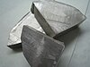

sodium

Definition: Sodium is a chemical element with the symbol Na (from Latin natrium) and atomic number 11. It is a soft, silvery-white, highly reactive metal. Sodium is an alkali metal, being in group 1 of the periodic table. Its only stable isotope is 23Na. The free metal does not occur in nature, and must be prepared from compounds. Sodium is the sixth most abundant element in the Earth's crust and exists in numerous minerals such as feldspars, sodalite, and halite (NaCl). Many salts of sodium are highly water-soluble: sodium ions have been leached by the action of water from the Earth's minerals over eons, and thus sodium and chlorine are the most common dissolved elements by weight in the oceans.
Source: Wikipedia
Wikipedia Page (Something wrong with this association? Let us know.)
Wikidata Page (Something wrong with this association? Let us know.)